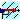

Physiolibrary.Hydraulic.Sources.UnlimitedOutflowPump
Physiolibrary.Hydraulic.Sources.UnlimitedOutflowPump
Extends from Modelica.Icons.SourcesPackage (Icon for packages containing sources).
| Name | Description |
|---|---|
| UnlimitedPump | Prescribed flow at port |
|  UnlimitedVolume | Prescribed pressure at port |
| UnlimitedOutflowPump | Prescribed flow at port |
Prescribed flow at port
This element needs to be connected only to next hydraulic elements, which contain calculation of hydraulic pressure in connector. It is because equation contains only hydraulic volume flow variable, which is set to value of input signal variable.
Extends from Chemical.Interfaces.ConditionalSolutionFlow (Input of solution volumetric flow vs. parametric solution volumetric flow).
| Name | Description |
|---|---|
| SolutionFlow | Volumetric flow of solution if useSolutionFlowInput=false [m3/s] |
| External inputs/outputs | |
| useSolutionFlowInput | =true, if solution flow input is used instead of parameter SolutionFlow |
| Name | Description |
|---|---|
| solutionFlow | [m3/s] |
| q_out |
Prescribed pressure at port
Model has a vector of continuous Real input signals as pressures for vector of pressure-flow connectors.
Usage in tests: Set defaul volume>0 and try to set STEADY in instances to "false"!
| Name | Description |
|---|---|
| P | Hydraulic pressure if usePressureInput=false [Pa] |
| External inputs/outputs | |
| usePressureInput | =true, if pressure input is used |
| Equilibrium | |
| Simulation | |
| isIsolatedInSteadyState | =true, if there is no flow at port in steady state |
| Simulation | If in equilibrium, then zero-flow equation is added. |
| Name | Description |
|---|---|
| pressure | Pressure [Pa] |
| y | PressureFlow output connectors |
Physiolibrary.Hydraulic.Sources.UnlimitedOutflowPumpPrescribed flow at port
This element needs to be connected only to next hydraulic elements, which contain calculation of hydraulic pressure in connector. It is because equation contains only hydraulic volume flow variable, which is set to value of input signal variable.
Extends from Chemical.Interfaces.ConditionalSolutionFlow (Input of solution volumetric flow vs. parametric solution volumetric flow).
| Name | Description |
|---|---|
| SolutionFlow | Volumetric flow of solution if useSolutionFlowInput=false [m3/s] |
| External inputs/outputs | |
| useSolutionFlowInput | =true, if solution flow input is used instead of parameter SolutionFlow |
| Name | Description |
|---|---|
| solutionFlow | [m3/s] |
| q_in |